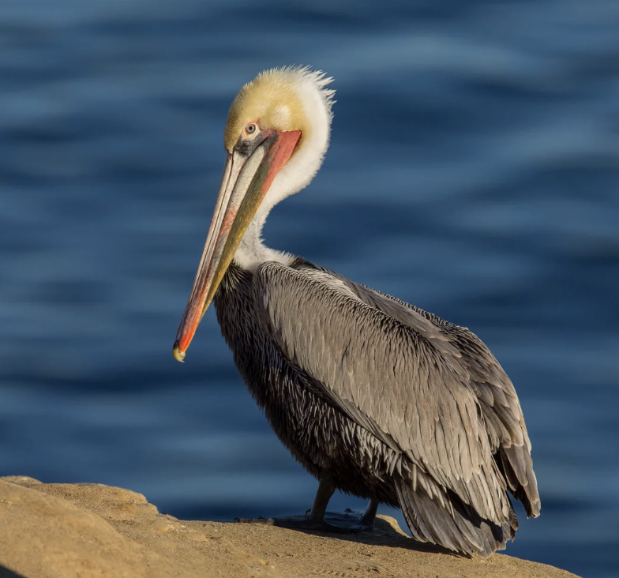
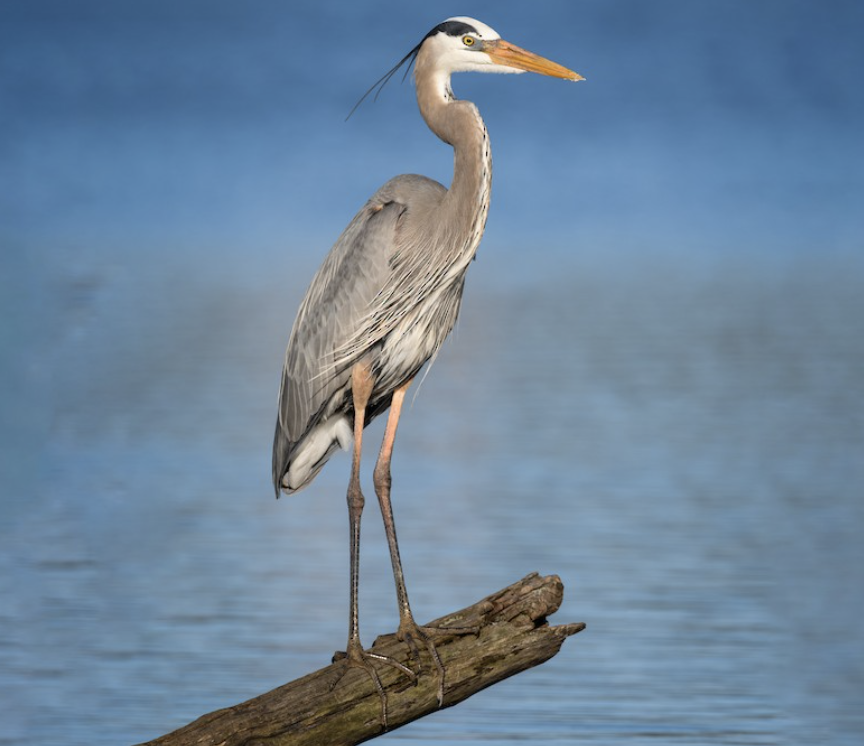
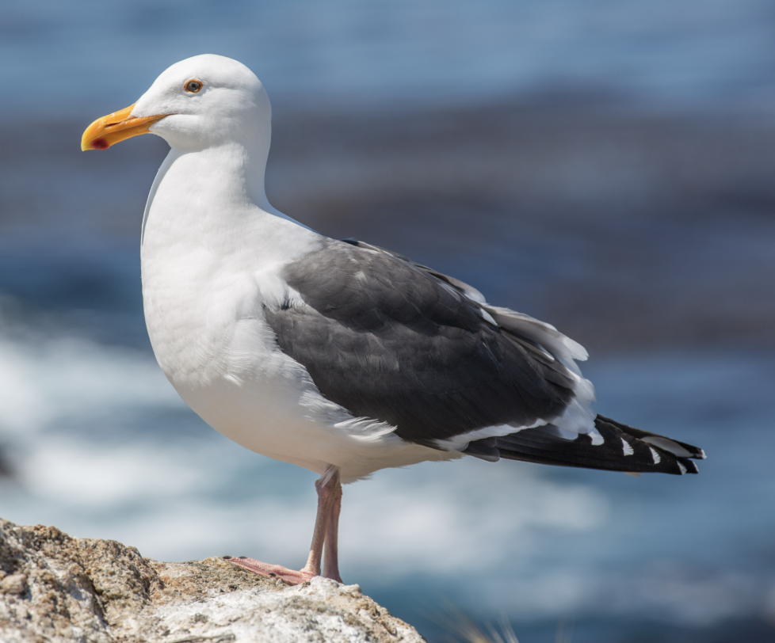
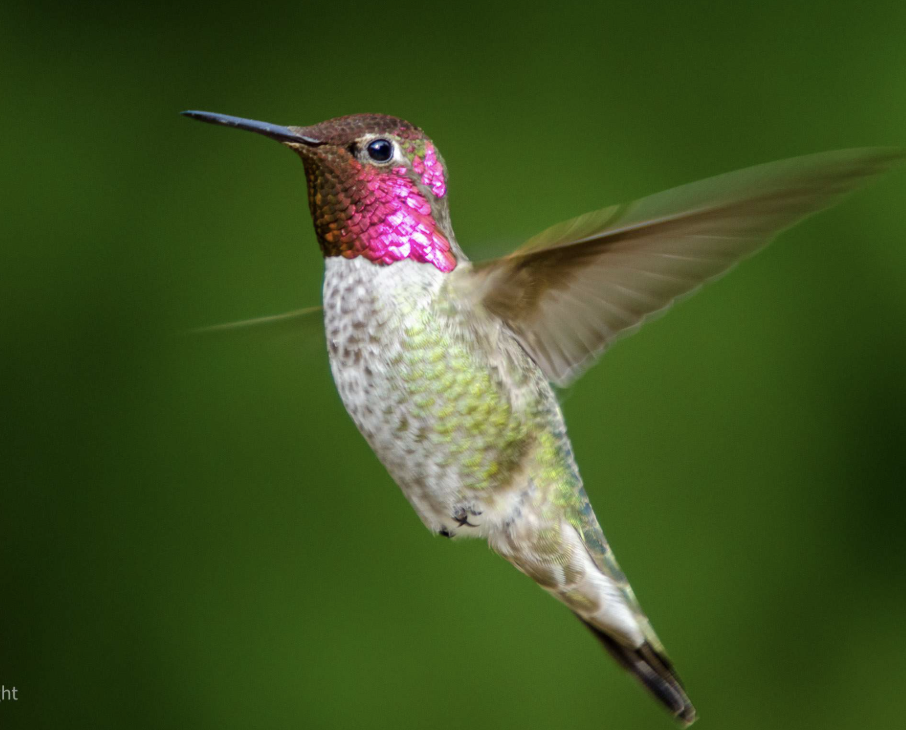
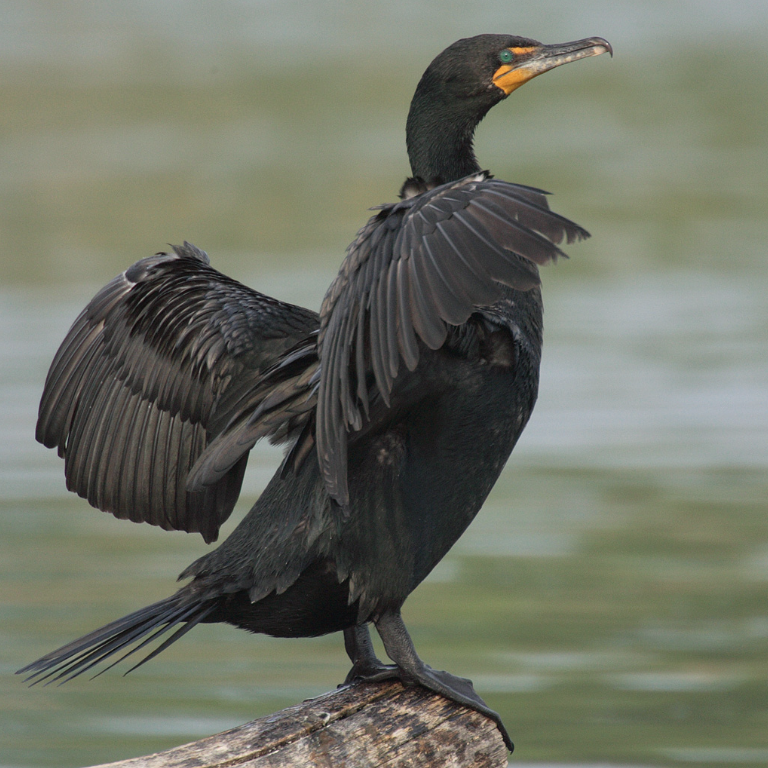

Crissy Field is one of the best and most accessible birding spots in San Francisco, where restored tidal marsh meets sandy beach along the Golden Gate. Its mix of lagoon, shoreline, open water, and grassy areas attracts a wide variety of birds year-round, from shorebirds and waterfowl to raptors and seabirds.
Birders can spot species like Brown Pelican gliding over the Bay, Western Gull along the beach, and waders such as Great Blue Heron hunting in the marsh. Migration seasons—especially fall and spring—bring even more diversity, making it a reliable and scenic destination for both beginners and experienced birders.





Crissy Field began as a tidal marsh and shoreline along the northern edge of the San Francisco Peninsula, used for centuries by Indigenous Ohlone peoples. In the early 1900s, the marsh was filled and transformed into an airfield for the U.S. Army. Named in 1921 after Major Dana H. Crissy, it became an important military aviation site within the Presidio, serving as a training and testing ground for early flight on the West Coast.
By the late 20th century, the airfield had fallen into disuse. In the early 2000s, a major restoration project removed pavement, restored tidal wetlands, and reconnected the area to the Bay. Today, Crissy Field is part of the Golden Gate National Recreation Area and stands as one of the country’s most successful urban habitat restoration projects — transforming a former military base into a vibrant public park and thriving bird habitat.